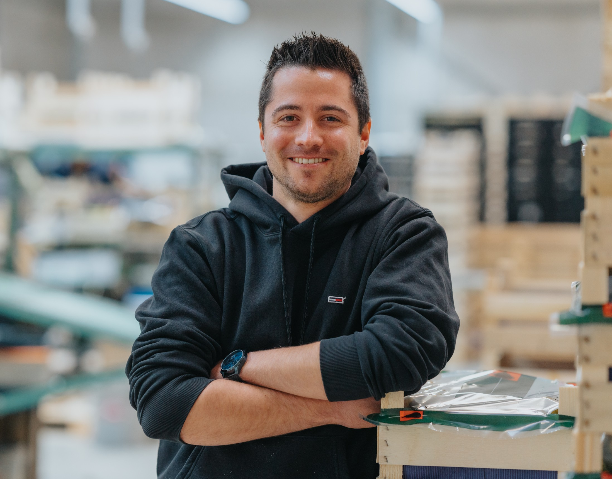

Software Developer – .NET specialist
Software Developer bij Agromanager sinds eind 2020. Hier ben ik elke dag bezig met het verder ontwikkelen van mijn vaardigheden en het verfijnen van mijn expertise. Mijn carrièrepad is echter niet standaard: van schrijnwerker naar softwareontwikkelaar, heb ik mezelf omgeschoold om mijn passie voor technologie te volgen. Ik heb een graduaat behaald in avondschool en ben momenteel bezig met mijn professionele bachelor in afstandsonderwijs. Mijn ervaring en interesse liggen voornamelijk in softwareontwikkeling, waarbij de focus ligt op .NET. Wat mij vooral aanspreekt in mijn vak is het volledige proces: van idee tot oplevering.
REST-service voor geografische data zoals landen, rivieren en steden.
Technologieën: C#
🔗 Bekijk project op GitHubEenvoudige webshop applicatie.
Technologieën: JavaScript, React Native, Firebase
🔗 Bekijk project op GitHubDigitale versie van het kaartspel Splendor.
Technologieën: Java
🔗 Bekijk project op GitHubBeheersysteem voor voertuigen. Dit was het eindproject voor mijn graduaat Programmeren.
Technologieën: C#
🔗 Bekijk project op GitHubWebapplicatie rond de Olympische Spelen, ontwikkeld in het kader van een programmeervak.
Technologieën: Java, Spring Framework
🔗 Bekijk project op GitHub.NET Developer bij Agromanager (dec 2020 – heden)
Ontwikkeling en onderhoud van softwaretoepassingen in de fruitteeltsector met focus op .NET.
HOGENT – Bachelor Toegepaste Informatica (2022 – 2026)
Onderwijsvorm: afstandsonderwijs
HOGENT – Graduaat Programmeren (2019 – 2022)
Onderwijsvorm: avondschool